Hello, we are
KD Pressing – Sheet Metal Parts & Sub Assembly Manufacturer in Waluj MIDC, Aurangabad
Sheet Metal Parts & Sub Assemblies
We press precise, durable sheet metal components for India's automotive industry from our Waluj, Aurangabad facility. Quality. Assured.
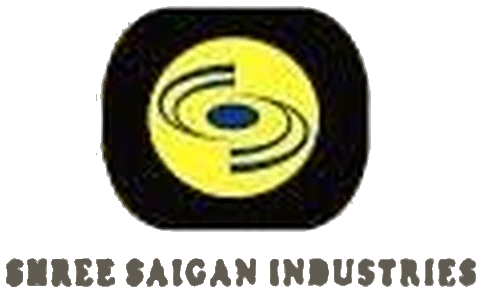
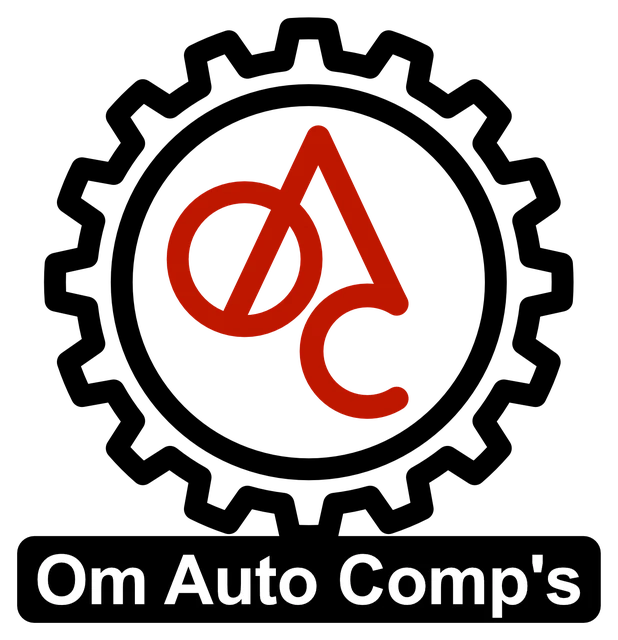
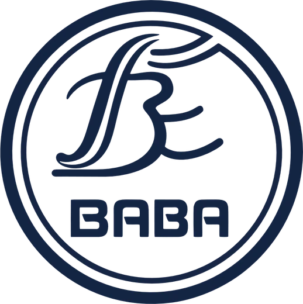
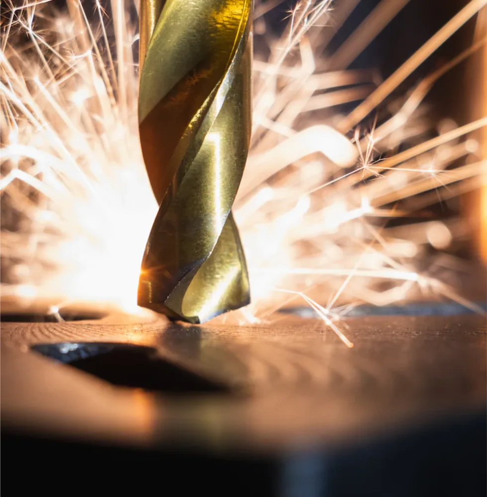
About us
Pressing with Precision,
Building with Purpose
Established in February 2017, KD Pressing is an industrial manufacturer of a wide range of sheet metal components and sub assemblies for India's automotive industry, with a 5,000 sq. ft. manufacturing facility.
Respect for law, ethics and people keeps every activity of the business transparent. That makes us the preferred choice of our business partners.
What we do
Our Capabilities
From a coil or sheet to a finished, inspected part, handled under one roof.
Press work
Mechanical power presses from 10 ton to 150 ton for sheet metal components.
Shearing & blanking
Sheet cutting on a 1525 mm × 4 mm shearing machine, plus decoiler-fed stock.
Sub assemblies
Drilling, orbital riveting and surface grinding, with welding equipment proposed.
Inspection & testing
UTM, hardness testing, CMM and calibrated measuring instruments.
Plant & machinery
The Shop Floor

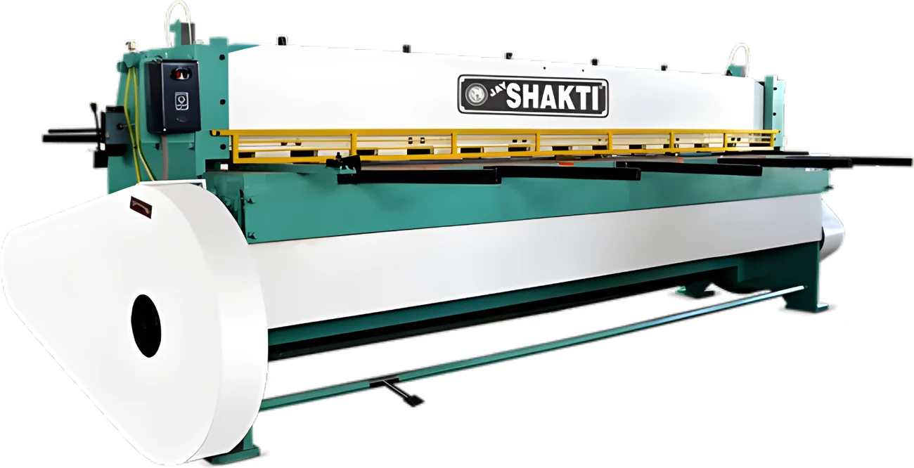
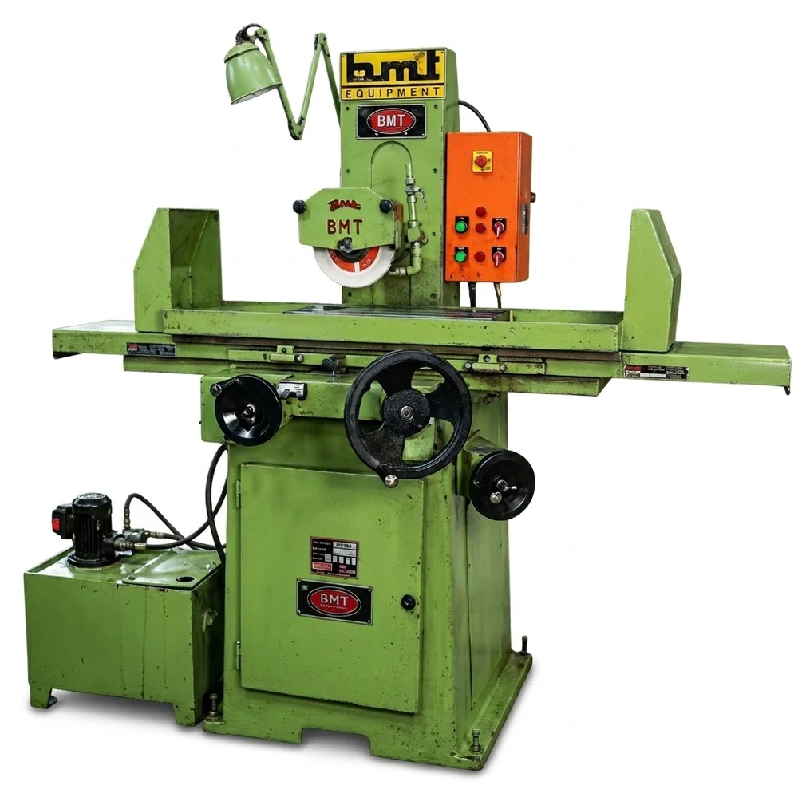
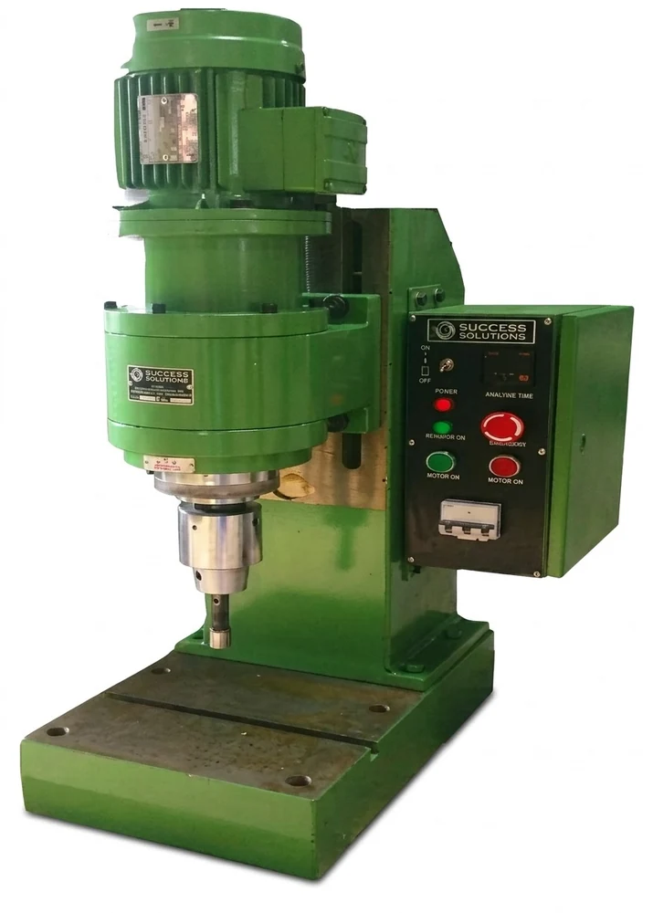
Our products
Parts We Press
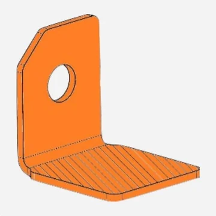
L-bracket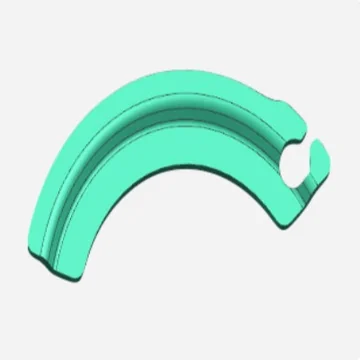
Arc plate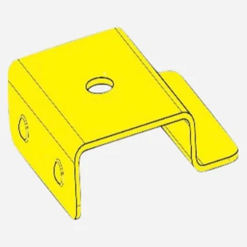
U-channel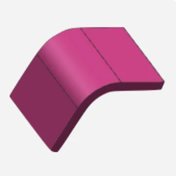
Bent strap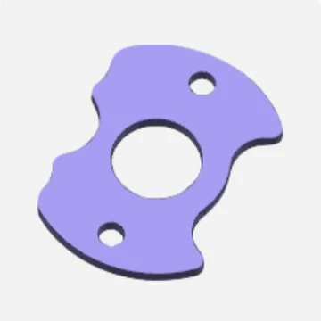
Cam plate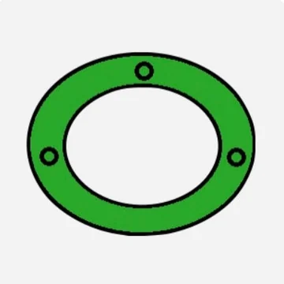
Flat ringValued customers
Who We Press For
Quick answers
Frequently Asked Questions
Short answers about KD Pressing, our plant and how to order.
What does KD Pressing manufacture?
KD Pressing manufactures sheet metal components and sub assemblies for India's automotive industry, including brackets, plates, washers and bent parts, made to the customer's drawing.
Where is KD Pressing located?
KD Pressing is in Waluj MIDC, Aurangabad, Maharashtra, India, at Plot No 09, GUT No. 23, Sai Udyog Nagari, Behind Cosmo Films, Kamlapur Village, 431 136. The manufacturing facility covers 5,000 sq ft.
When was KD Pressing established?
KD Pressing was established in February 2017. Its tagline is Quality. Assured.
What press capacity does KD Pressing have?
KD Pressing runs 22 mechanical power presses in eight sizes, from 10 ton to 150 ton, supported by a 1525 mm by 4 mm shearing machine and a manual decoiler for coil feed, plus an inverter-base CO2 welding machine.
Which industries and customers does KD Pressing serve?
KD Pressing serves the automotive industry as a third party vendor for Tier-II vendors of the BAL cluster. Customers include Sakshi Industries, Shree Saigan Industries, Om Auto Comp's and Baba Engineers.
How does KD Pressing check quality?
Parts are tested and measured with a UTM, a hardness tester, a CMM and calibrated Baker micrometer, vernier calliper and height gauge, all under the 5S workplace system.
What secondary operations does KD Pressing offer?
Alongside pressing and shearing, KD Pressing offers drilling, orbital riveting and surface grinding for sub assemblies. Inverter-base CO2 welding is done in-house, and projection and spot welding machines are planned.
How do I request a quote from KD Pressing?
Email corporate@kdpressing.com or call +91 99708 43177 or +91 99222 22088 with the part name or drawing, the material and thickness, and the monthly quantity.
Have a part in mind?
Send us the drawing, material, thickness and monthly quantity.